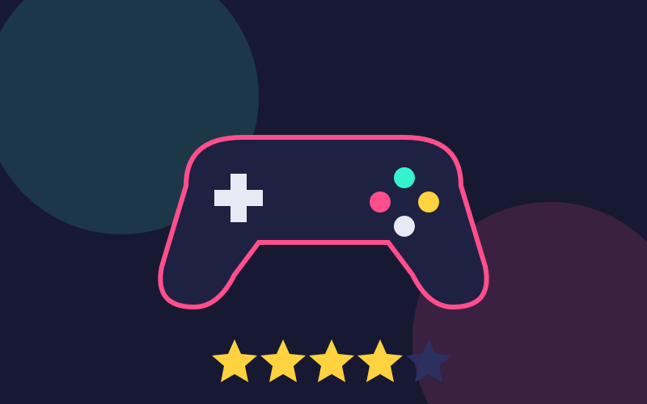

Lançamentos
Os jogos mais aguardados do momento, datas previstas e o que já se sabe sobre cada um.
Ver lançamentos →O Save Point é um blog para quem gosta de videogame e quer ficar por dentro do que está saindo, saber se um jogo vale a pena antes de comprar e relembrar os clássicos que marcaram gerações.
A ideia aqui é simples: falar de jogos sem enrolação. Cada seção do blog tem um objetivo. Em Lançamentos você acompanha os jogos que estão chegando e o que esperar deles. Em Análises tem a nossa opinião sincera sobre jogos que já jogamos, com nota e pontos fortes e fracos. E em Retrô a gente volta no tempo para contar a história dos consoles e jogos que começaram tudo.
Tem alguma sugestão de pauta ou quer mandar um recado? É só ir na página de Contatos.
Os jogos mais aguardados do momento, datas previstas e o que já se sabe sobre cada um.
Ver lançamentos →
Reviews com nota, prós e contras para ajudar você a decidir qual será seu próximo jogo.
Ler análises →
A história dos consoles clássicos e curiosidades sobre os games que marcaram época no Brasil.
Voltar no tempo →